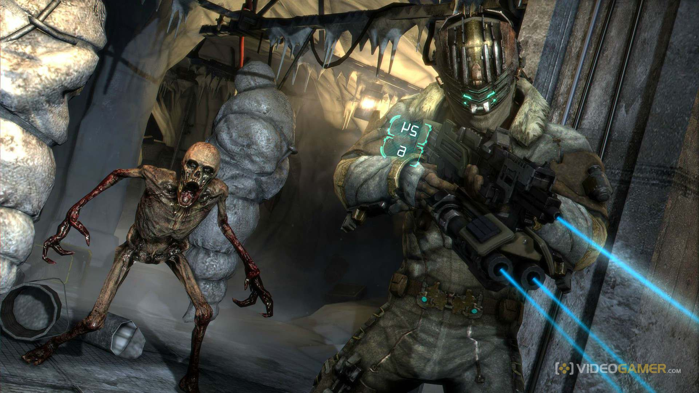
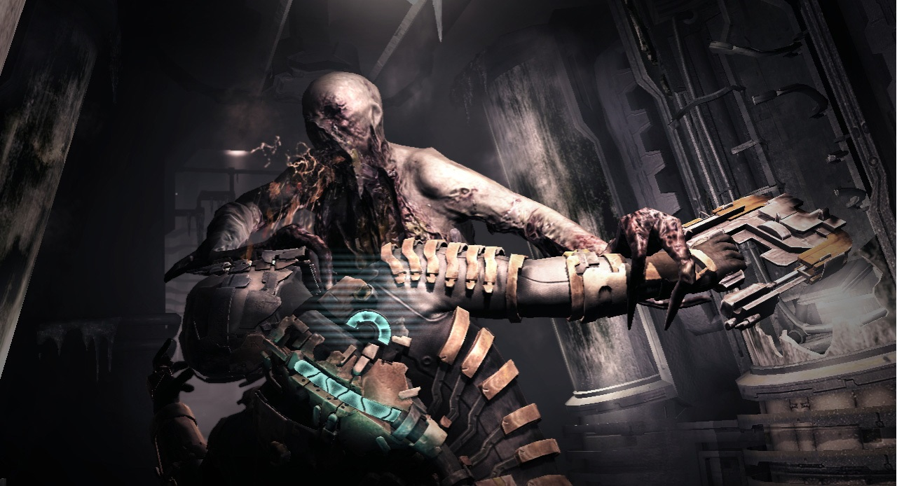
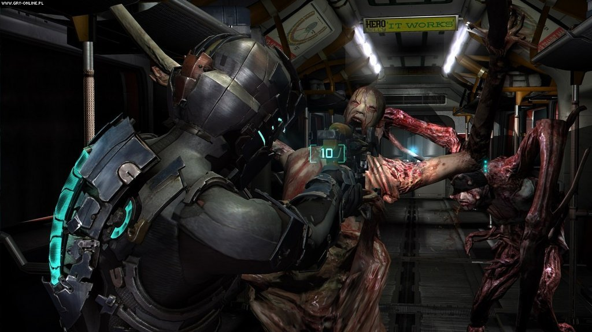
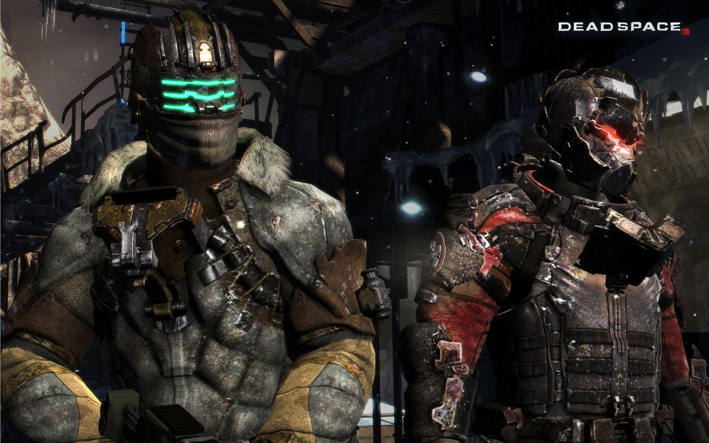

Dead Space


فضای مرده یه بازی ویدئویی علمی-تخیلی در سبک ترس و بقا است. بازیکنان آیزاک کلارک را از نمای سوم شخص در اختیار دارند. بازیکن، سفینه فضایی ایشیمورا[و ۲] را هدایت میکند، ماموریت هایی را که به آیزاک دادهشده را تکمیل میکند، معماهای فیزیکی را حل میکند و با هیولاهایی به نام نکرومورف میجنگد. در بعضی قسمتهای سفینه که تخریب شده، آیزاک باید فشار هوا را کنترل کند. در خلا، آیزاک ظرفیت هوای محدود دارد که با پیداکردن مخزن هوا در محیط دوباره پر میشود. در مناطق جاذبه-صفر آیزاک و بعضی از دشمنان میتواند بین سطوح بپرند؛ این مکانها معمولا معما دارند. در حین کاوش در سفینه ایشیمورا، آیزاک میتواند مهمات، بستهخون و همچنین منابع تغذیه الکتریکی را که برای بازکردن درهای مخصوص و ارتقای سلاح و لباس به کار میرود، را پیدا کند. در بعضی مکانهای سفینه آیزاک میتواند به فروشگاه دسترسی داشته باشد تا مهمات و تجهیزات بخرد. آیزاک همچنین میتواند از خط مکانیابی برای پیداکردن ماموریتهای مرحله بعد استفاده کند.

داستان
آیزاک با سفینه کالیون به همراه هموند و کاندرا وارد اجیس ۷ میشود. در طی سفر، آیزاک مکررا پیام ویدئویی از نیکول دریافت میکند. یک نقص فنی در سیستم فرود اتوماتیک، به فرودگاه سفینه ایشمورا خسارت شدیدی وارد کرد و باعث تخریب محل قرنطینه آن شد. نکرومورف ها همهی خدمهی کلیون را بهجز آیزاک، کندرا و هموند میکشند. آیزاک سفینه را میپیماید، سیستم ها را بازیابی می کند و قطعاتی را برای تعمیر سفینه پیدا می کند تا شاید بتوانند فرار کنند. آنها تقریبا داشتند موفق میشدند ولی از طرفی کلیون به دلیل مشکلات فنی نابود میشود. در هر سه بازمانده، علائم روانپریشی افزایش پیدا میکند، از توهم گرفته تا پارانویا.
در حین کاوش، آیزاک از طریق گزارش های صوتی و تصویری از وقایع سفینه و حمله نکرومورف با خبر میشود. عملیات استخراج غیرقانونی ایشیمورا در سیاره اجیس ۷، که توسط دولت زمین غیرقانونی تعیین شده بود، برای یافتن مارکر قرمز کلیسای یونیتولوژی بود. مستعمره اجیس ۷ تقریباً به طور کامل توسط روان پریشی که توسط مارکر ایجاد شده بود، از بین رفت. مارکر از میان جسدهای مستعمرهنشینان و بازمانندگان به ایشیمورا بردهشد. نفوذ مارکر، مبارزات جناحی و حمله نکرومورفها منجر به کشتهشدن همه سرنشینان شد. ایزاک دو بازمانده پیدا می کند: ترنس کین ، که اعتقاد خود را به یونیتولوژی کنار گذاشته است و چالوس مرسر که دیوانه شده و نکرومورف ها را می پرستد.